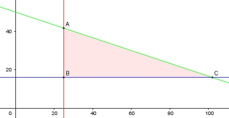

Aufgabe 73 Zu einem Lehrbuch für 16 € gibt es eine CD mit Aufgaben und Lösungen zu 48 €. Eine Buchhandlung will mindestens 15 CDs und 25 Lehrbücher einkaufen, aber nicht mahr als 2 400 € ausgeben. Zeichnen Sie das Planungsgebiet. x = Anzahl Lehrbücher y = Anzahl CDs Bedingungen: 1. x ≥ 25 x ∈ ℕ 2. y ≥ 15 y ∈ ℕ 3. 16x + 48y ≤ 2 400

Die Eckpunkte A, B und C bilden das Planungsgebiet, das alle Ungleichungen erfüllt. Eckpunkt A: Randgerade 1. geschnitten mit Randgerade 3. 16 * 25 + 48y = 2 400 |-400 48y = 2 000 |:48 2 y = 41--- 3 2 A(25|41---) --> keine ganzzahlige Lösung für y. 3 Eckpunkt A: Randgerade 2. geschnitten mit Randgerade 3. 16x + 16 * 48 = 2 400 |-768 16x = 1 632 |:16 x = 102 B(102|16) 1. 102 ≥ 25 2. 16 ≥ 15 3. 16 * 102 + 48 * 16 = 2 400 ≤ 2 400 --> ist ein möglicher Einkauf, denn alle 3 Bedingungen werden erfüllt.